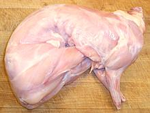

Popularly, rabbits are thought of as rodents, but they actually belong to order Lagomorpha, not Rodentia - though the two orders are more closely related than once thought. All domesticated and pet rabbits are of the single European species (O. cuniculus) found wild all across Europe and now Australia where it has become quite the pest.
American cottontail rabbits range from parts of South America through pretty much all of North America. While often hunted for food, they are not farmed. Hares and Jackrabbits (genus Lepus) are similar to rabbits but generally have longer ears, run faster and do not burrow. Like cottontails, they are hunted but not farmed.
Rabbits make good pets and are easily taught to use a litter box. They are, however, not good around small children as they are a bit fragile and also might bite if startled. They are also not good around computers as they mistake wires and cables for roots and chew them to pieces. Also, the males tend to get a bit horny and may try to hump your foot or other objects. Photo © i0092 .
More on Rodents & Rabbits.
Rabbit has been described as "chicken without wings". It is used similarly and tastes similar to the dark meat of a free range chicken. It is, however, more delicate in texture (chicken is stringier). Wild rabbit hare and jackrabbit does, of course, have a stronger "gamier" flavor than farmed rabbit.
In Southern California rabbit tends to be on the expensive side, though less costly purchased from one of the big Asian markets. If economy is a real issue, use chicken thigh meat in place of rabbit, cut in a way where the stringiness won't be too noticeable.
 Unless you live near a rabbit producer (or are one) you're going to get your rabbit dressed and frozen as in the photo. You can cut it apart similarly to how you would cut a chicken into pieces. The photo specimen weighed 2-3/4 pounds, fairly typical.
Rabbits are vegetarian so they will not have trichinosis and need not be over cooked.
Do Not discard the bones and offcuts, rabbit makes an excellent
soup stock. If you don't have enough, combine it with some chicken bones
and offcuts.
Rabbit meat is high in protein and very low in fat. There are no particular diseases or disorders to worry about with commercial rabbit.
ar_rabbitz 080511 - www.clovegarden.com